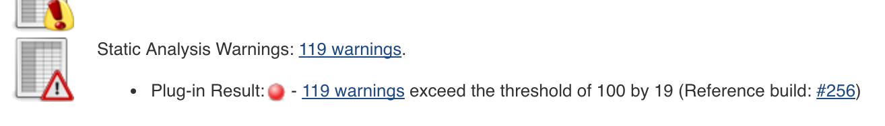

checksPublishResults¶
Description¶
This step can publish static check results from various sources.
Prerequisites¶
- static check result files - To use this step, there must be static check result files available.
- installed plugins:
- pmd
- dry
- findbugs
- checkstyle
- warnings
- core
Parameters¶
| name | mandatory | default | possible values |
|---|---|---|---|
aggregation |
no | [active:true, thresholds:[fail:[high:0]]] |
true, false, Map |
archive |
no | false |
|
checkstyle |
no | [pattern:**/target/checkstyle-result.xml, archive:true, active:false, thresholds:[fail:[high:0]]] |
true, false, Map |
cpd |
no | [pattern:**/target/cpd.xml, archive:true, active:false, thresholds:[fail:[high:0]]] |
true, false, Map |
eslint |
no | [pattern:**/eslint.xml, archive:true, active:false, thresholds:[fail:[high:0]]] |
true, false, Map |
findbugs |
no | [pattern:**/target/findbugsXml.xml, **/target/findbugs.xml, archive:true, active:false, thresholds:[fail:[high:0]]] |
true, false, Map |
pmd |
no | [pattern:**/target/pmd.xml, archive:true, active:false, thresholds:[fail:[high:0]]] |
true, false, Map |
pylint |
no | [pattern:**/pylint.log, archive:true, active:false, thresholds:[fail:[high:0]]] |
true, false, Map |
script |
yes | ||
tasks |
no | [pattern:**/*.java, low:, normal:TODO,REVISE,XXX, high:FIXME, archive:true, active:false, thresholds:[fail:[high:0]]] |
true, false, Map |
aggregation- Allows to publish the check results.archive-checkstyle- Publishes Checkstyle findings with the Checkstyle plugin.cpd- Publishes CPD findings with the DRY plugin.eslint- Publishes ESLint findings (in JSLint format) with the Warnings plugin.findbugs- Publishes Findbugs findings with the Findbugs plugin.pmd- Publishes PMD findings with the PMD plugin.pylint- Publishes PyLint findings with the Warnings plugin, pylint needs to run with--output-format=parseableoption.script- The common script environment of the Jenkinsfile running. Typically the reference to the script calling the pipeline step is provided with thethisparameter, as inscript: this. This allows the function to access thecommonPipelineEnvironmentfor retrieving, e.g. configuration parameters.tasks- Searches and publishes TODOs in files with the Task Scanner Plugin.
aggregation¶
| parameter | mandatory | default | possible values |
|---|---|---|---|
| thresholds | no | none | see thresholds |
tasks¶
| parameter | mandatory | default | possible values |
|---|---|---|---|
| pattern | no | '**/*.java' |
|
| archive | no | true |
true, false |
| high | no | 'FIXME' |
|
| normal | no | 'TODO,REVISE,XXX' |
|
| low | no | ||
| thresholds | no | none | see thresholds |
pmd¶
| parameter | mandatory | default | possible values |
|---|---|---|---|
| pattern | no | '**/target/pmd.xml' |
|
| archive | no | true |
true, false |
| thresholds | no | none | see thresholds |
cpd¶
| parameter | mandatory | default | possible values |
|---|---|---|---|
| pattern | no | '**/target/cpd.xml' |
|
| archive | no | true |
true, false |
| thresholds | no | none | see thresholds |
findbugs¶
| parameter | mandatory | default | possible values |
|---|---|---|---|
| pattern | no | '**/target/findbugsXml.xml, **/target/findbugs.xml' |
|
| archive | no | true |
true, false |
| thresholds | no | none | see thresholds |
checkstyle¶
| parameter | mandatory | default | possible values |
|---|---|---|---|
| pattern | no | '**/target/checkstyle-result.xml' |
|
| archive | no | true |
true, false |
| thresholds | no | none | see thresholds |
eslint¶
| parameter | mandatory | default | possible values |
|---|---|---|---|
| pattern | no | '**/eslint.jslint.xml' |
|
| archive | no | true |
true, false |
| thresholds | no | none | see thresholds |
pylint¶
| parameter | mandatory | default | possible values |
|---|---|---|---|
| pattern | no | '**/pylint.log' |
|
| archive | no | true |
true, false |
| thresholds | no | none | see thresholds |
Step configuration¶
We recommend to define values of step parameters via config.yml file.
In following sections of the config.yml the configuration is possible:
| parameter | general | step/stage |
|---|---|---|
aggregation |
X | |
archive |
X | |
checkstyle |
X | |
cpd |
X | |
eslint |
X | |
findbugs |
X | |
pmd |
X | |
pylint |
X | |
script |
||
tasks |
X |
Dependencies¶
The step depends on the following Jenkins plugins
Transitive dependencies are omitted.
The list might be incomplete.
Consider using the ppiper/jenkins-master docker image. This images comes with preinstalled plugins.
Thresholds¶
It is possible to define thresholds to fail the build on a certain count of findings. To achive this, just define your thresholds a followed for the specific check tool:
thresholds: [fail: [all: 999, low: 99, normal: 9, high: 0]]
This way, the jenkins will fail the build on 1 high issue, 10 normal issues, 100 low issues or a total issue count of 1000.
The thresholds parameter can be set for aggregation, tasks, pmd, cpd, findbugs, checkstyle, eslint and pylint.
checksPublishResults( tasks: true, pmd: [pattern: '**/target/pmd-results.xml', thresholds: [fail: [low: 100]]], cpd: [archive: false], aggregation: [thresholds: [fail: [high: 0]]], archive: true )

Side effects¶
If both ESLint and PyLint results are published, they are not correctly aggregated in the aggregator plugin.
Exceptions¶
none
Example¶
// publish java results from pmd, cpd, checkstyle & findbugs checksPublishResults archive: true, pmd: true, cpd: true, findbugs: true, checkstyle: true, aggregation: [thresholds: [fail: [high: 0]]]
// publish javascript results from ESLint checksPublishResults archive: true, eslint: [pattern: '**/result-file-with-fancy-name.xml'], aggregation: [thresholds: [fail: [high: 0, normal: 10]]]
// publish scala results from scalastyle checksPublishResults archive: true, checkstyle: [pattern: '**/target/scalastyle-result.xml']
// publish python results from pylint checksPublishResults archive: true, pylint: [pattern: '**/target/pylint.log']